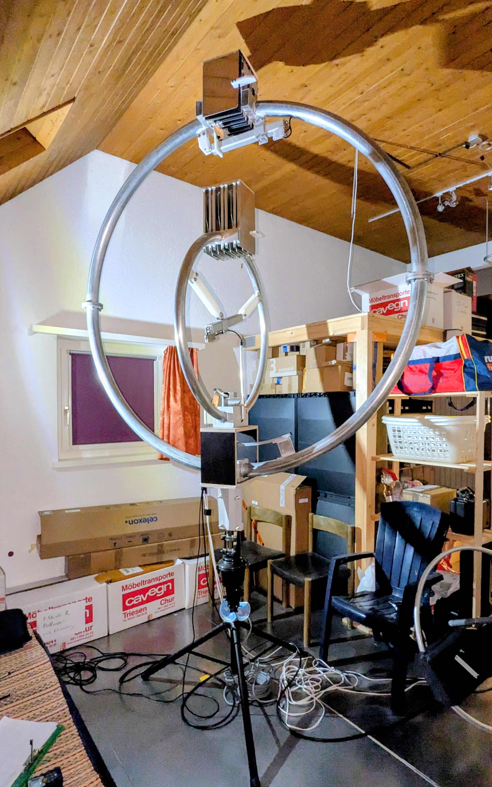
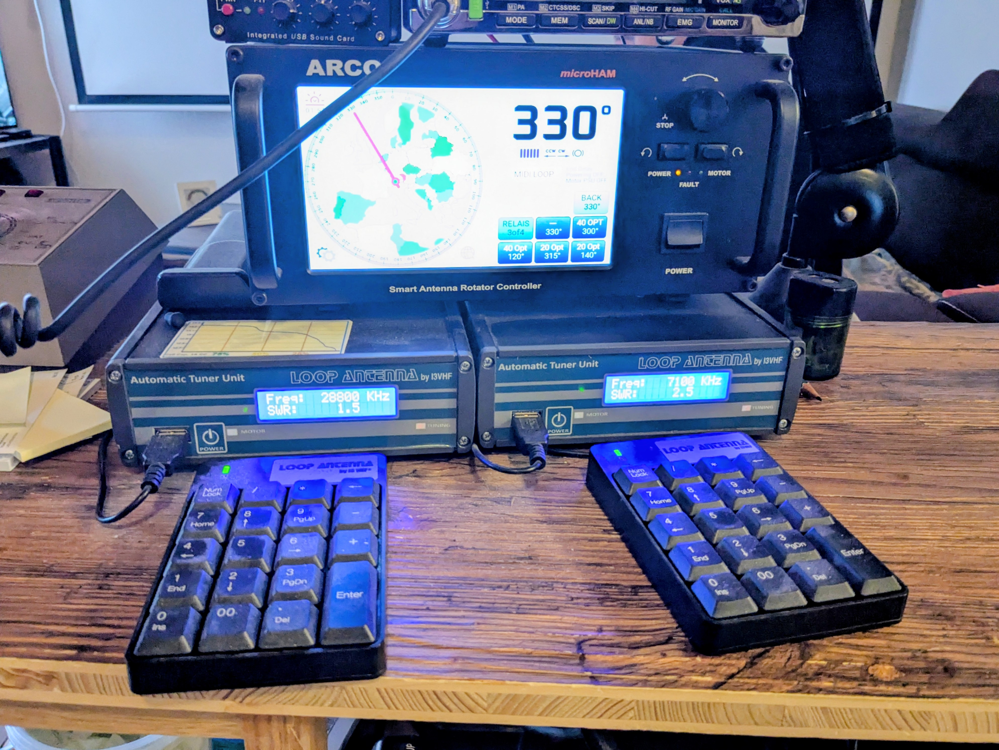
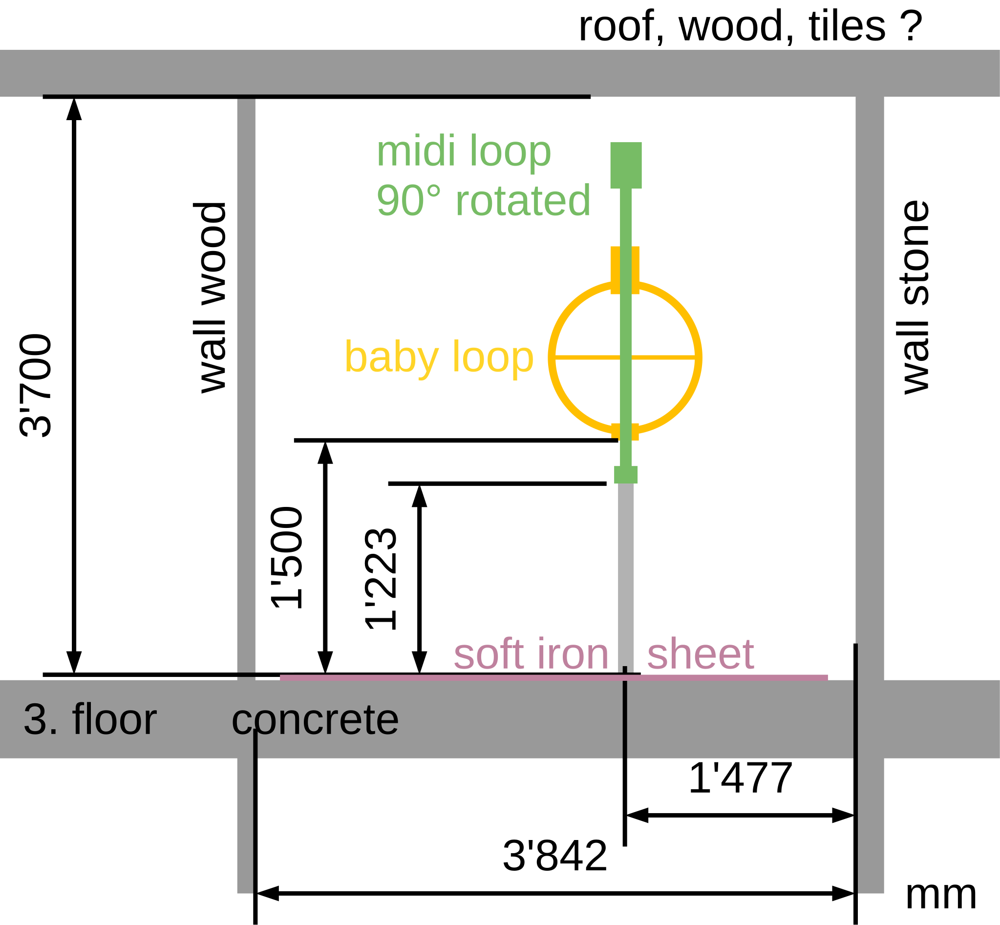
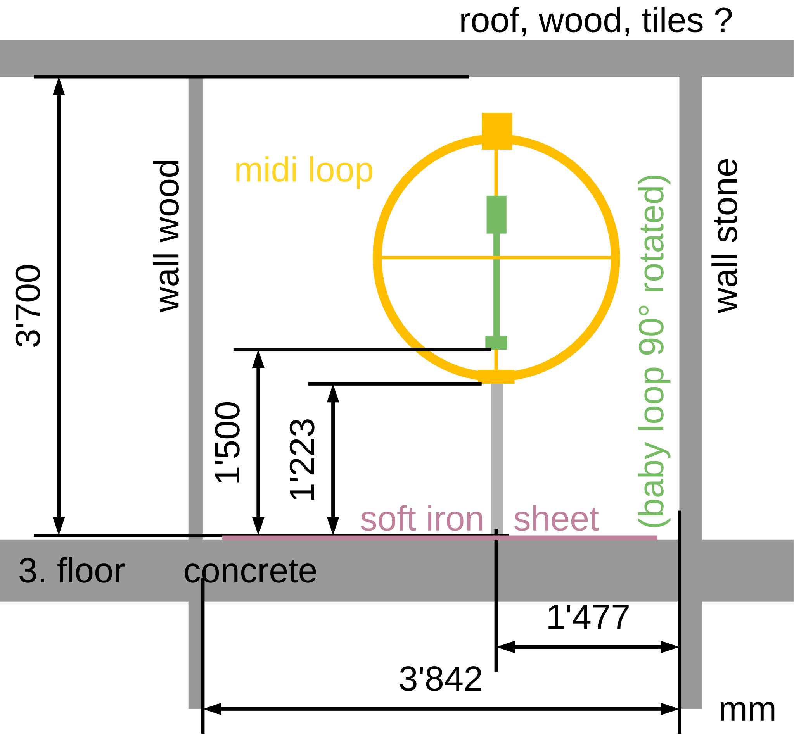
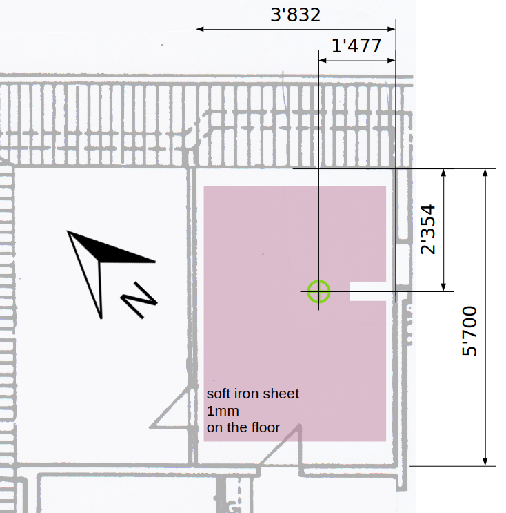
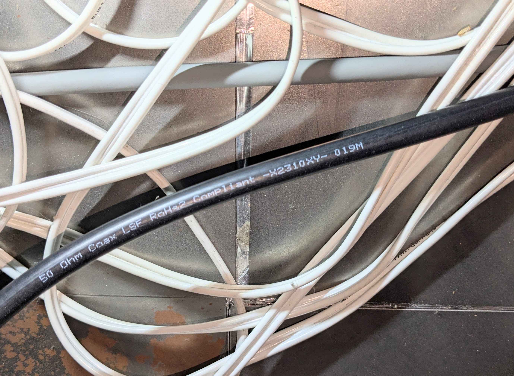
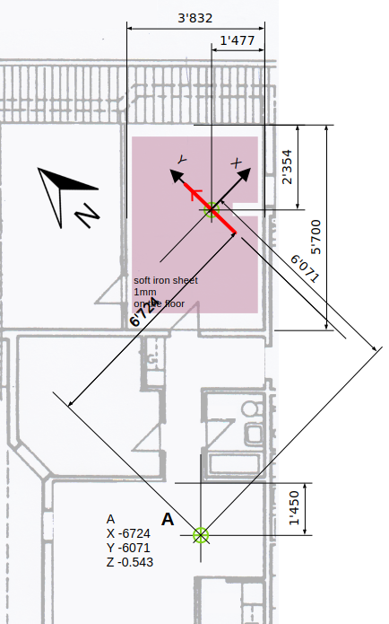

{kind=link}

Info: Widely used antenna from the manufacturer Mazzoni, Italy.
Conductor: Aluminium tube, 2 mm wall thickness, bare untreated surface.
Capacitor: Variable air capacitor; the plate stack at the top of the antenna is telescoped in and out.
Enviroment: Indoor, 3rd floor below the roof.
Thanks: Many thanks to Stefan for the support and for allowing me to publish these measurement values and supporting documents.
| Band | 80m | 60m | 40m | 30m | 20m | |
| Frequency f | MHz | 3.650 | 5.362 | 7.097 | 10.116 | 14.156 |
| Bandwidth BSWR=2.62 | kHz | 6.2 | 18.2 | 47.2 | 57.1 | 182.1 |
| Loop diameter D | m | 1.920 | ||||
| Conductor diameter d | m | 0.073 | ||||
| Loop count n | 1 | 1 | ||||
| Power into antenna P | W | 100 | 100 | 100 | 100 | 100 |
| Inductance L | H | 4.04e-06 | ||||
| Capacitance C | F | 4.71e-10 | 2.18e-10 | 1.24e-10 | 6.13e-11 | 3.13e-11 |
| Unloaded Q0 | 1 | 590 | 295 | 150 | 177 | 78 |
| Damping resistance RT | Ohm | 0.157 | 0.462 | 1.197 | 1.449 | 4.623 |
| Radiation resistance RR | Ohm | 0.00576 | 0.0269 | 0.0829 | 0.346 | 1.352 |
| Loss resistance RLoss | Ohm | 0.151 | 0.435 | 1.114 | 1.103 | 3.271 |
| swr_min | 1 | 1.70 | 2.61 | 3.93 | 2.33 | 4.04 |
| etaSWR_ant | % | 93.3 | 80.1 | 64.7 | 84.1 | 63.6 |
| Antenna efficiency η | % | 3.42 | 4.66 | 4.48 | 20.1 | 18.6 |
| Loop current I | A | 25.24 | 14.71 | 9.14 | 8.31 | 4.65 |
| Loop voltage Uloop | V | 2339 | 2003 | 1646 | 2133 | 1671 |
| Magnetic dipole moment m | A m² | 73.087 | 42.604 | 26.460 | 24.050 | 13.466 |

This is a special setup: inside a Mazzoni Midi Loop, a Mazzoni Baby Loop is mounted with a 90° vertical rotation. This arrangement minimizes mutual coupling.
The antennas are installed on the 3rd floor, in an attic room with a high ceiling.
When operating the Midi, the Baby is fixed to 10 m. In addition, the Baby antenna port is switched to a dummy load
via a relay antenna switch.
When operating the Baby, the Midi is fixed to 80 m. In addition, the Midi antenna port is switched to a dummy load
via a relay antenna switch.
The antennas can be rotated using a rotor.
There are sensitive bands where the antenna can only be tuned by the ATU in a specific orientation.

A lot of experimentation was done with the relative antenna positions and with their placement inside the room. The gamma match of the Midi Loop was modified (increased coupling) to optimize SWR.




The VNA calibration was done at the antenna feed point: green line.
Common-mode choke at the antenna: positron.ch/rf/choke_simple.
Used cables: 80 cm RG400 (including the choke) and 10 m LMR195.
The cable attenuation alpha and the cable delay tau in the following table should therefore be small.
| File | model_f0 MHz |
model_BSWR2_62 kHz |
model_alpha db |
model_tau ns |
SWR_min | eta_SWR_ant |
|---|---|---|---|---|---|---|
| 20260820_1824_midi_swr_1p6_330grad_4MHz_VALUES.py | 3.650 | 6.2 | 0.000 | -1.87 | 1.70 | 0.933 |
| 20260820_1828_midi_swr_2p1_330grad_5MHz_VALUES.py | 5.362 | 18.2 | 0.000 | 4.85 | 2.61 | 0.801 |
| 20260820_1831_midi_swr_2p5_330grad_7MHz_VALUES.py | 7.097 | 47.2 | 0.000 | 4.71 | 3.93 | 0.647 |
| 20260820_1837_midi_swr_2p5_300grad_10MHz_VALUES.py | 10.116 | 57.1 | 0.000 | 3.95 | 2.33 | 0.841 |
| 20260820_1842_midi_swr_2p5_315grad_14MHz_VALUES.py | 14.156 | 182.1 | 0.065 | 4.55 | 4.04 | 0.625 |
The following diagrams: red points = measured values; green line = fitted model.
| Smith | SWR |
|---|---|
20260820_1824_midi_swr_1p6_330grad_4MHz | 20260820_1824_midi_swr_1p6_330grad_4MHz |
20260820_1828_midi_swr_2p1_330grad_5MHz | 20260820_1828_midi_swr_2p1_330grad_5MHz |
20260820_1831_midi_swr_2p5_330grad_7MHz | 20260820_1831_midi_swr_2p5_330grad_7MHz |
20260820_1837_midi_swr_2p5_300grad_10MHz | 20260820_1837_midi_swr_2p5_300grad_10MHz |
20260820_1842_midi_swr_2p5_315grad_14MHz | 20260820_1842_midi_swr_2p5_315grad_14MHz |
The main loop inductance is an important parameter because it directly affects the antenna efficiency calculation.
The inductance can be estimated from geometry (L). In general, an additional measurement is used as a cross-check, especially for non-circular loops where the geometric estimate is more difficult.
The resonance frequency of the LC circuit depends on L and C. Additional known capacitors are connected in parallel with the existing capacitor, and the new resonance frequency is measured.
| L | H | 4.04e-06 | calculated from geometry of the main loop |
| L100 | H | 4.128e-06 | derived from the resonance frequencies fOFF and f100 deviation +2% vs L |
| L560 | H | 4.123e-06 | derived from the resonance frequencies fOFF and f560 deviation +2% vs L |
| CNIX | As/V | 1.636e-12 | derived from using L100, fOFF, and fNIX estimated parasitic capacitance of switches and wiring; expected value 1 ... 2 pF |
The maximum deviation between L and the capacitor-based L1x values is +2%. This is considered a small deviation and is accepted. L is used for the calculations of the antenna efficiency.
The H-field can be calculated under free-space conditions. In practice, however, the building contains numerous conductive objects that distort the field. To quantify the extent of this distortion, the H-field was measured and compared with the theoretical predictions.
The H-field is measured with a small measurement loop. The setup is described in https://arxiv.org/abs/2607.10828.

| tx_power_w | 100.0 |
| f_Hz | 3740000 |
| attenuation_cables_connectors_total_dbm | 0.44 dB |
| tx_after_cable_w | 90.4 |
| I_main_loop_A | 24.0 |
| magnetic dipole moment m (Am2) | 69.5 |
| X | Y | Z | expected | measured | factor | |
|---|---|---|---|---|---|---|
| m | m | m | A/m | A/m | ||
| A | -6.7 | -6.1 | -0.5 | 0.0133 | 0.0691 | 5.179 |
The measured field is significantly higher than the expected field under free-space conditions.
I can think of the following possible reasons:
I would have liked to perform additional H-field measurements to investigate the large factor further. Unfortunately, the travel distance to the installation site is long and the effort is too high, so I leave this measurement as it is.
All antennas overview: compare page
{kind=link}
{kind=link}
{kind=link}